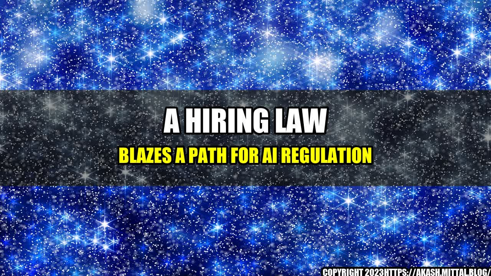

A Hiring Law Blazes a Path for AI Regulation

A Robot Hiring Manager's Error Leads to Legal Action

In 2022, a large tech company announced that they had implemented a new hiring system, one that used artificial intelligence to analyze resumes and conduct initial interviews. The system was praised for being unbiased and efficient, and was soon adopted by several other companies in the industry.
However, it wasn't long before the flaws in the system became apparent. One woman, who had applied for a position at the tech company, was repeatedly rejected despite having more experience and qualifications than many of her male counterparts. It wasn't until she filed a lawsuit that the company discovered their AI system had been trained on data that reflected implicit biases against women, and that the system itself had begun to perpetuate those biases.
The lawsuit was settled out of court, but it sparked a conversation about the regulation of AI systems in hiring and other areas of business.
The Rise of AI in Hiring and the Need for Regulation
The use of artificial intelligence in hiring has become increasingly common in recent years, as companies look for ways to automate and streamline their HR processes. But as the above story illustrates, there are significant risks associated with relying on AI in this way.
AI systems can perpetuate and amplify biases and discrimination that exist in society, often without humans even realizing it. They can also be based on flawed or incomplete data, which can lead to faulty decision-making.
As a result, there is a growing recognition that AI systems need to be subject to regulation and oversight, particularly when it comes to high-stakes decisions like hiring.
AI Bias and Discrimination
There have been several studies that have highlighted the ways in which AI systems can perpetuate biases and discrimination. For example:
- A 2018 study by the National Institute of Standards and Technology found that facial recognition software was more likely to misidentify people of color and women than white men.
- A 2019 study by the AI Now Institute found that hiring tools were prone to discriminating against women and other marginalized groups, in part because they relied on historical data that included biased and discriminatory patterns.
- In 2020, UK researchers found that an AI language model had learned to associate certain professions with gender in a biased way, for example by suggesting "he" as the pronoun for doctors and "she" as the pronoun for nurses.
These studies and others like them illustrate the need for more oversight and regulation of AI systems, particularly as they become more ubiquitous in our lives.
The Future of AI Regulation in Hiring
So what does the future of AI regulation in hiring look like? There are several steps that policymakers and industry leaders can take to ensure that AI systems are fair, transparent, and effective:
- Require AI systems to be auditable. Companies that use AI in hiring should be required to disclose how their systems work, what data they use, and what outcomes they produce. This would allow for greater accountability and transparency.
- Ensure that training data is unbiased and representative. To prevent AI systems from perpetuating biases and discrimination, it's important to ensure that the data they are trained on reflects the diversity of the population.
- Invest in human oversight and intervention. While AI systems can be useful in streamlining the hiring process, it's important to have human oversight to catch errors and ensure that decisions are fair and just.
By taking these steps and others like them, we can work towards creating an AI-powered hiring system that is both efficient and equitable.
Conclusion: AI Regulation in Hiring is Essential
The rise of AI in hiring has been met with both excitement and trepidation. While AI systems can bring a lot of benefits, they also have the potential to perpetuate biases and discrimination, which can have serious consequences for individuals and society as a whole.
By regulating AI in hiring, policymakers and industry leaders can work towards creating a system that is fair, transparent, and effective. This will require a commitment to auditing, unbiased training data, and human oversight, among other things.
Ultimately, the goal should be to create an AI-powered hiring system that enhances diversity, equity, and inclusion, rather than undermining it.
References
Hashtags
- #AIregulation
- #hiringbias
- #diversityandinclusion
- #AIethics
Category
Technology, Human Resources, Ethics
Curated by Team Akash.Mittal.Blog
Share on Twitter Share on LinkedIn